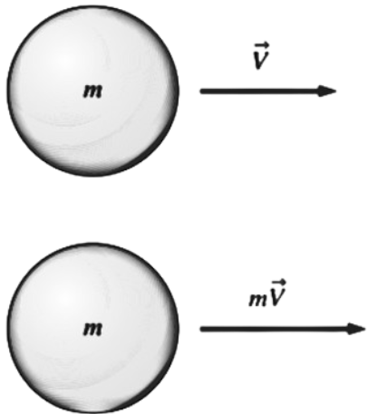

For a rigid body of mass \( m \), Newton’s second law is expressed as \[ \vec{F} = m \vec{a} = m \frac{d\vec{V}}{dt} = \frac{d(m\vec{V})}{dt} \] where \( \vec{F} \) is the net force acting on the body and \( \vec{a} \) is the acceleration of the body under the influence of \( \vec{F} \)
The product of the mass and the velocity of a body is called
the linear momentum or just
the momentum of the body. The momentum of a rigid body of
mass \( m \) moving with velocity \( \vec{V} \) is \( m\vec{V} \),
then Newton’s second law can also be stated
as the rate of change of the momentum of a body is equal to the net force acting on the body
\[
\underbrace{\vec{F}}_{\text{Net force}} = m \vec{a} = m \, \frac{d\vec{V}}{dt} = \underbrace{\frac{d(m\vec{V})}{dt}}_{\text{Rate of change of momentum}}
\]
This statement is more in line with Newton’s original statement of the second law,
and it is more appropriate for use in fluid mechanics when studying the forces generated
as a result of velocity changes of fluid streams
Therefore, in fluid mechanics, Newton’s second law is usually
referred to as the linear momentum equation
1Fluid Mechanics: Fundamentals and Applications Fourth Edition. Çengel and J. M. Cimbala, McGraw-Hill, New York (2018).